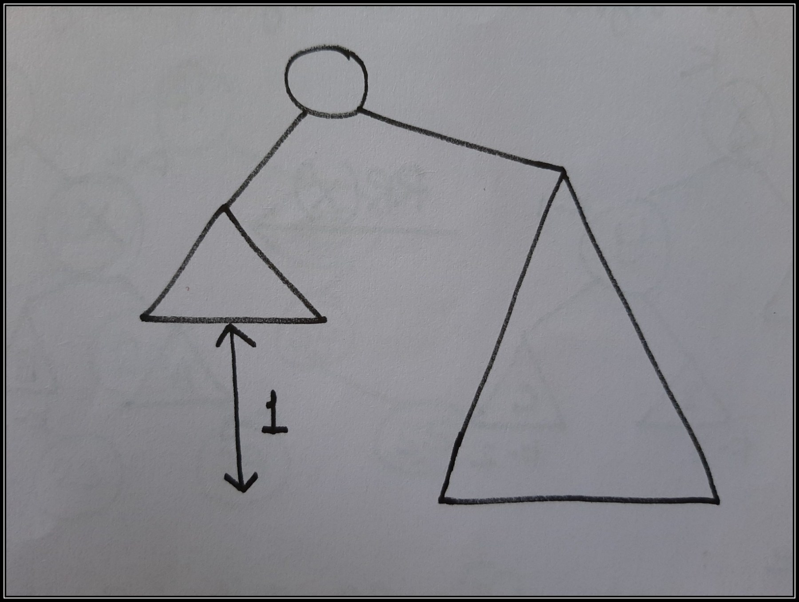
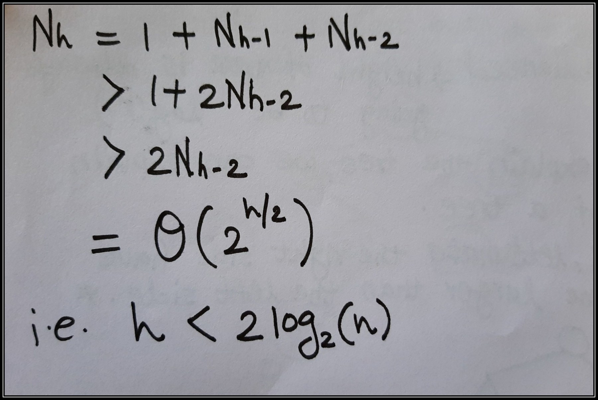
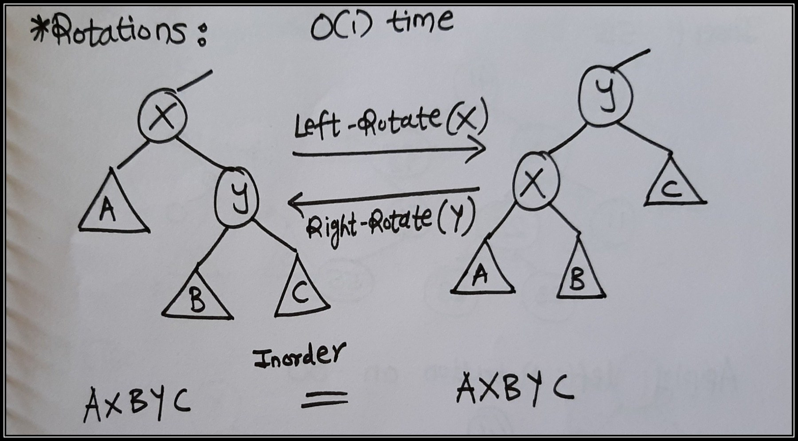
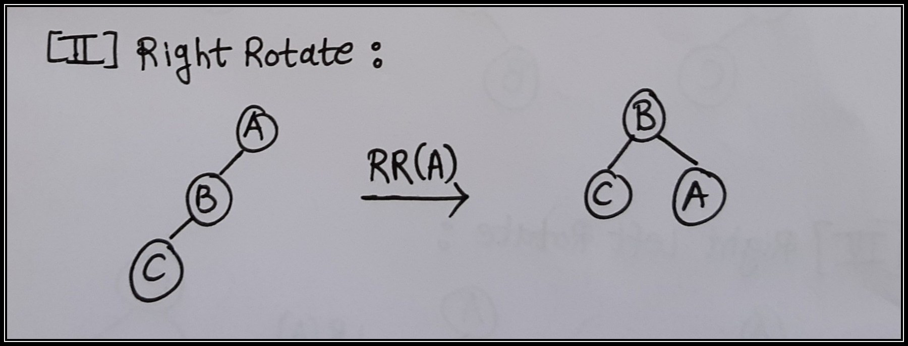
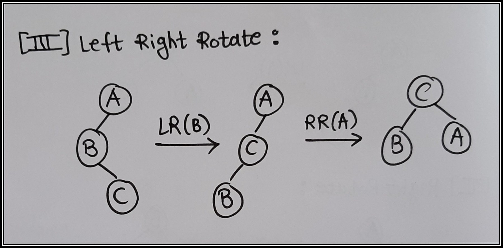

Balanced Binary Search Tree
This article is about Balanced Binary Search Trees. This blogs covers, What are balanced binary search trees? Why they are important? What problems they resolves? How they are better over binary search tree? and How to implement them?
Prerequisite:
Binary Search Tree(BST).
We all know about Binary Search Tree. We expect operations like Insertion,Searching data i.e. finding predecessor and successor and Deletion should get done in O(lg(n)) time where 'n' is total number of nodes. But in worst case of Binary Search Tree some BST are skew as showed in below figure:
In skew BST complexity not remains O(lg(n)) for operations as all nodes are either tilted toward left or right side of a node, Here Balanced Binary Search Trees comes in picture. What are balanced binary search trees? They are lots of self-balanced binary tree in this blog I'm going to talk about AVL (Adelson, Velskii, and Landi) Tree.
In AVL tree we called the tree balanced if height h is O(lg(n)).
Defination of Height:
Length of the longest path always going down i.e. length of longest path from root to the some leaf. Comparision of height between balanced and unbalanced tree BST is shown in the below image:Now the question should ask is how do we compute the height of a node???
Take max of the height of the children add 1. Height of a node = max(height(leftChild),height(rightChild)) + 1
Depth of a single node is to be -1. Why -1? => Because the above formula works. Like leaves for example, have two childrens, which are -1 you take the max you add 1 and you get 0 so that just make things works out..
Require height of left and right children of every node to differ by at most +1 or -1. For every node, lets make the right side have a height of one larger than the left side.

Let Nh = minimum number of nodes in an AVL Tree of height h then height of AVL is obtained by using 'n' nodes should be:

How to achive above calculate height? Here comes the AVL Insertion:
1) Simple BST insert.
2) Fix AVL property from changed node up.
How to fix AVL property? ====> By Rotations(constant time operation).
Basically there are two types of rotations which we can perform on BST those are "Right Rotation" and "Left Rotation". Why those are look at the below image:

From the above figure, why are we doing leftRotation(X) because we are assuming right subtree of X is heavier than left one and in case of RightRotation(Y) assuming left subtree of Y is heavier than right one. If the node is left heavy we perform rightRotate opertion we respect to the node and if node if right heavy we perform leftRotate operation with respect to the node. I will give you example of each cases can occur while inserting a node into tree.
There are total 4 possible cases can occur while in case of AVL tree insertion.Let A, B and C be an item. Order of how they represent is matter.
[I] Left Rotate:
We need to perform left rotation of a node when A < B < C. In this case we perform operation leftRotate(A) because balance factor of A is less than -1.
[II] Right Rotate:
We need to perform right rotation of a node when A > B > C. In this case we perform operation rightRotate(A) because balance factor of A is greater than 1. [III] Left Right Rotate:
We need to perform left right rotation when A > B < C. In this case we have to perform leftRotate(B) then it will becomes A > C > B now perform rightRotate(A), balance factor of A is also less than -1. [IV] Right Left Rotate:
We need to perform right left rotation when A < B > C. In this case we have to perform rightRotate(B) then it will becomes A < C < B now perform leftRotate(A), balance factor of A is also greater than 1. Hope you get the insertion of AVL-Tree.Deletion of node from an AVL Tree:
Deleting a node is same as that of binary search tree, after removing node we just have to maintain the property of AVL tree.I hope that you have cleared all things now. Use this link AVL-Tree for source code. Thank You!